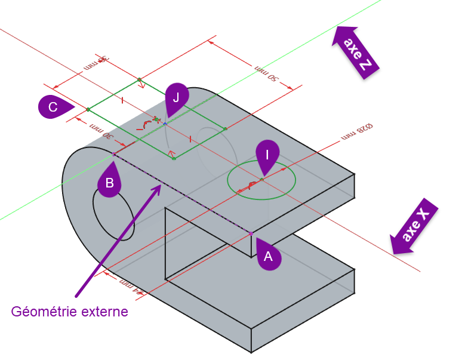

Uitsparingen & gaten (Pocket)Évidements & perçages (Pocket)Pockets & holes (Pocket)
Tot nu toe voegden we materiaal toe met Pad. Nu doen we het omgekeerde: met Pocket snijden we materiaal weg. Zo hollen we ons massieve blok uit tot een echte bak, en maken we een connectoruitsparing en schroefgaten — de bak wordt nu echt een behuizing voor je printplaat.Jusqu'ici on ajoutait de la matière avec Pad. Maintenant l'inverse : Pocket enlève de la matière. On creuse le bloc en boîte, et on perce une ouverture pour connecteur et des trous de vis.So far we added material with Pad. Now the opposite: Pocket removes material. We hollow our block into a real box and cut a connector opening and screw holes — the box becomes a true enclosure.
- een schets maken op een vlak van een bestaand volumecréer un croquis sur une face d'un solidecreate a sketch on a face of an existing solid
- met Pocket materiaal wegsnijden (uithollen, uitsparingen)enlever de la matière avec Pocketremove material with Pocket
- de pocket-diepte kiezen (op maat, door alles)choisir la profondeur (cotée, traversante)choose the pocket depth (to a dimension, through all)
- gaten maken voor connectoren en schroevenpercer pour connecteurs et vismake holes for connectors and screws
01Stap voor stap bouwen: schetsen op een vlakConstruire par étapes : croquis sur une faceBuilding in stages: sketch on a face
Een model bouw je in stappen op. Na de Pad kun je een vlak van het volume als nieuw schetsvlak gebruiken. Je selecteert dat vlak, kiest Schets maken, en tekent erop de vorm die je wil wegsnijden. Dat is precies hoe we de bak gaan uithollen en de gaten plaatsen.On construit par étapes. Après le Pad, on peut utiliser une face du volume comme nouveau plan de croquis : sélectionnez-la, Créer un croquis, et dessinez la forme à enlever.You build a model in stages. After the Pad you can use a face of the solid as a new sketch plane: select it, choose Create sketch, and draw the shape to remove.

02Pocket: de bak uithollenPocket : creuser la boîtePocket: hollowing the box
Pocket is het tegenovergestelde van Pad: in plaats van een schets uit te trekken, snijdt hij die in het materiaal. Om van ons massieve blok een bak te maken, tekenen we op de bovenkant een rechthoek die iets kleiner is dan de buitenrand (zodat er wanden overblijven), en pocketten we die naar beneden — maar niet helemaal door, zodat er een bodem overblijft. Het resultaat is een open bak waar je printplaat in past.Pocket est l'inverse de Pad : il enlève la matière. Sur le dessus, on dessine un rectangle plus petit que le contour (pour garder des parois) et on l'enfonce — pas jusqu'au bout, pour laisser un fond. On obtient une boîte ouverte.Pocket is the opposite of Pad: it cuts the sketch into the material. On the top, draw a rectangle slightly smaller than the outline (to keep walls) and pocket it down — but not all the way, to leave a bottom. The result is an open box your PCB fits into.
- 1Selecteer de bovenkant van het blok en maak een schets.Waarom: op dit vlak teken je de binnenholte van de bak.Sélectionnez le dessus et créez un croquis.Pourquoi : on y dessine la cavité.Select the top and create a sketch.Why: you draw the inner cavity here.
- 2Teken een rechthoek met aan elke kant bv. 2 mm wand, en bepaal hem volledig (groen).Waarom: de overblijvende rand wordt je wanddikte — belangrijk voor de sterkte én de printbaarheid.Dessinez un rectangle laissant p. ex. 2 mm de paroi, contraignez-le (vert).Pourquoi : le reste devient l'épaisseur de paroi.Draw a rectangle leaving e.g. 2 mm wall each side, fully constrain it (green).Why: the remaining rim becomes your wall thickness.
- 3Pas Pocket toe met een diepte die een bodem overlaat (bv. 22 mm in een blok van 25 mm).Waarom: "niet door alles" laat onderaan een bodemplaat staan.Appliquez Pocket avec une profondeur laissant un fond (p. ex. 22 mm sur 25).Pourquoi : « pas traversant » garde un fond.Apply Pocket with a depth that leaves a bottom (e.g. 22 mm in a 25 mm block).Why: "not through all" leaves a bottom plate.
Pocket heeft net als Pad diepte-modi: een vaste maat, of door alles (handig voor een opening die volledig moet doorlopen, zoals een connectorgat). Kies door alles voor doorlopende openingen en een maat voor de binnenholte.Pocket a des modes de profondeur : cotée, ou traversante (pour une ouverture débouchante). Traversant pour un trou de connecteur.Pocket has depth modes like Pad: a set value, or through all (for an opening that goes right through, like a connector hole).
03Connectoruitsparing en schroefgatenOuverture connecteur & trous de visConnector opening & screw holes
Een connectoruitsparing maak je door op een zijwand te schetsen (rechthoek of ronde vorm op maat van je connector) en die met Pocket door de wand te snijden (modus "door alles"). Schroefgaten zijn ronde uitsparingen: teken cirkels op de bodem of een flens en pocket ze — doorlopend voor een doorvoer, of op diepte voor een schroefkanaal.Une ouverture connecteur : croquis sur une paroi (rectangle/forme à la taille du connecteur), Pocket traversant. Les trous de vis : des cercles, Pocket traversant ou borgne.A connector opening: sketch on a side wall (a rectangle/shape sized to your connector) and Pocket through the wall. Screw holes: circles you pocket — through for a pass-through, or to depth for a screw channel.
Ronde gaten printen vaak iets te klein, en horizontale gaten (in een staande wand) kunnen bovenaan inzakken. Houd je connectoropening dus eerder iets ruimer, en test met een printje. De details (teardrop-vorm, speling) behandelen we in H16 (ontwerpen voor 3D-print).Les trous impriment souvent un peu petits ; les trous horizontaux s'affaissent en haut. Prévoyez un peu de jeu, testez. Détails en H16.Round holes often print slightly small; horizontal holes can sag at the top. Keep connector openings a touch generous and test-print. Details (teardrop, clearance) in H16.
Pad voegt toe, Pocket neemt weg. Beide werken op een schets op een vlak. Met deze twee — plus slim gekozen diepte — bouw je vrijwel elke behuizingsvorm.Pad ajoute, Pocket enlève. Avec ces deux opérations, on construit presque tout boîtier.Pad adds, Pocket removes. With these two — plus the right depth — you can build almost any enclosure.
Nu wordt het tastbaar: je bak heeft wanden, een bodem, een opening voor je connector en gaten om de printplaat vast te zetten. Meet je connector op (bv. een USB- of SMA-doorvoer) en plaats de uitsparing op de juiste hoogte t.o.v. de PCB.Concret : parois, fond, ouverture connecteur et trous de fixation. Mesurez le connecteur (USB, SMA) et placez l'ouverture à la bonne hauteur.Now it's tangible: walls, a bottom, a connector opening and mounting holes. Measure your connector (USB, SMA) and place the opening at the right height relative to the PCB.
Hol je blok uit tot een bak: schets op de bovenkant een rechthoek met 2 mm wand rondom en Pocket hem tot een bodem van ~3 mm overblijft. Maak daarna op een zijwand een rechthoekige connectoruitsparing (Pocket "door alles"). Voeg tot slot vier schroefgaten toe in de bodem. Exporteer een STL en bekijk hem in je slicer.Creusez la boîte (rectangle, 2 mm de paroi, Pocket avec fond ~3 mm). Ajoutez une ouverture connecteur (Pocket traversant) et quatre trous. Exportez un STL.Hollow the box (rectangle, 2 mm walls, Pocket leaving a ~3 mm bottom). Add a connector opening (Pocket through all) and four screw holes. Export an STL.
04Veelgemaakte foutenErreurs fréquentesCommon mistakes
- Pocket te ondiep of te diep. Te diep snijdt door je bodem heen. Gebruik een maat die een bodem overlaat, of "door alles" enkel voor echte openingen.Profondeur erronée. Trop profond perce le fond. Laissez un fond, ou « traversant » seulement pour les ouvertures.Pocket too shallow/deep. Too deep cuts through the bottom. Leave a bottom, or use "through all" only for real openings.
- Op het verkeerde vlak schetsen. Controleer welk vlak je geselecteerd hebt voor je begint te tekenen.Mauvaise face. Vérifiez la face sélectionnée avant de dessiner.Sketching on the wrong face. Check which face is selected before drawing.
- De uitsparing niet vastgelegd t.o.v. de randen. Dan verschuift ze bij wijzigingen. Verbind ze met de bestaande geometrie (externe geometrie, H11).Évidement non lié aux arêtes. Il se déplace. Reliez-le (géométrie externe, H11).Opening not tied to the edges. It drifts on edits. Link it to existing geometry (external geometry, H11).
05Samenvatting
Met Pocket snijd je materiaal weg uit een bestaand volume, op basis van een schets op een vlak. Zo holde je het blok uit tot een bak met wanden en bodem, en maakte je een connectoruitsparing (door alles) en schroefgaten. Samen met Pad heb je nu de twee kernbewerkingen om elke behuizing op te bouwen.Avec Pocket, on enlève de la matière selon un croquis sur une face : boîte à parois et fond, ouverture connecteur, trous. Avec Pad, ce sont les deux opérations clés.With Pocket you remove material per a sketch on a face: a box with walls and bottom, a connector opening, screw holes. With Pad, these are the two core operations.
- Pad voegt toe, Pocket neemt weg — beide vanuit een schets op een vlak.Pad ajoute, Pocket enlève — depuis un croquis sur une face.Pad adds, Pocket removes — both from a sketch on a face.
- Diepte: op maat (laat bodem/wand) of door alles (echte opening).Profondeur : cotée ou traversante.Depth: to a value or through all.
- Gaten printen vaak ondermaats → houd connectoropeningen iets ruimer (zie H16).Trous souvent petits → un peu de jeu (H16).Holes often print small → keep openings a touch generous (H16).